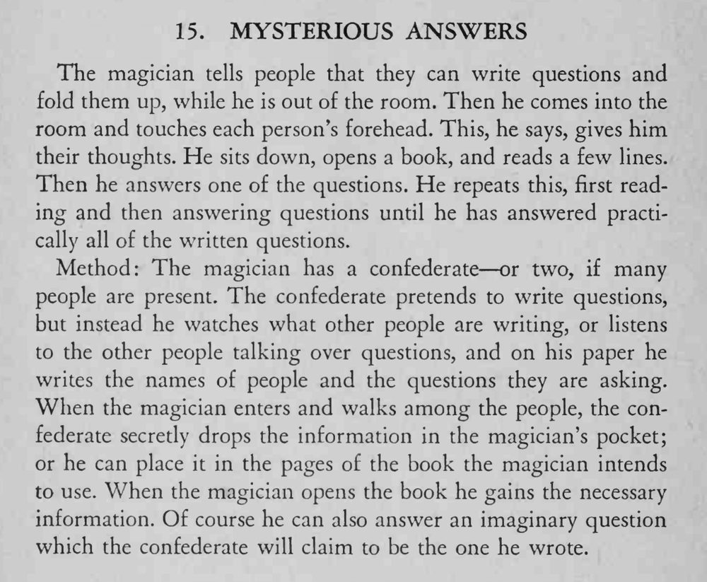

魔术师离场时观众写好问题折起；他回来后逐一触碰额头，翻开书念几行，就能把写下的问题一五一十答出来。
同伙要自然融入观众，传递纸片的时机不能让第三人看见。

The magician tells people that they can write questions and fold them up, while he is out of the room. Then he comes into the room and touches each person's forehead. This, he says, gives him their thoughts. He sits down, opens a book, and reads a few lines. Then he answers one of the questions. He repeats this, first reading and then answering questions until he has answered practically all of the written questions. Method: The magician has a confederate or two, if many people are present. The confederate pretends to write questions, but instead he watches what other people are writing, or listens to the other people talking over questions, and on his paper he writes the names of people and the questions they are asking. When the magician enters and walks among the people, the confederate secretly drops the information in the magician's pocket; or he can place it in the pages of the book the magician intends to use. When the magician opens the book he gains the necessary information. Of course he can also answer an imaginary question which the confederate will claim to be the one he wrote.